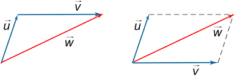
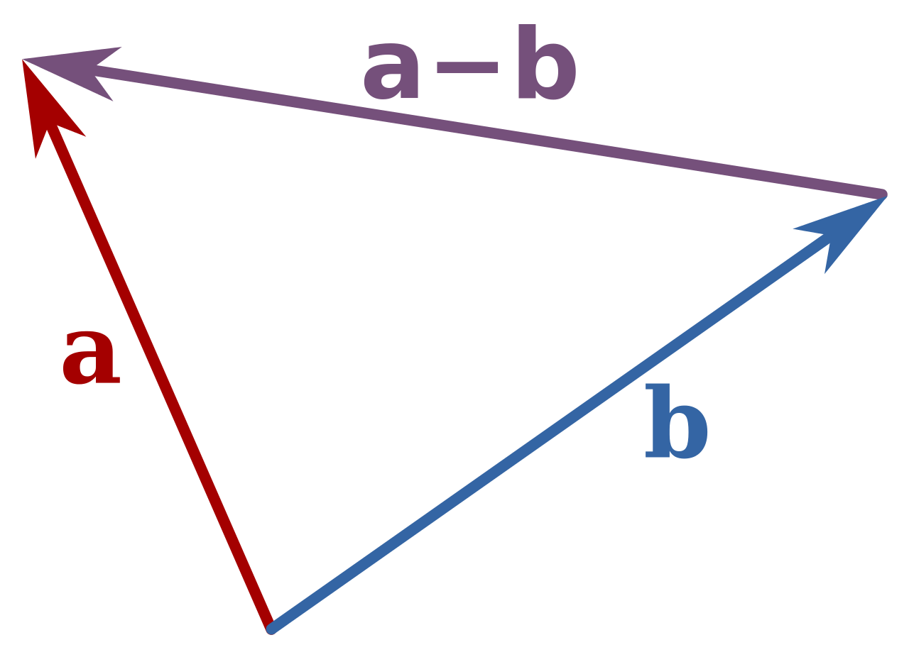

Basic Math
Arithmetic
Roman Numeral System
- Roman Numeral System uses the following character to represent numbers:
I(1)X(10)C(100)M(1000)V(5)L(50)D(500)
- The following rules are satisfied when writing and reading roman numerals:
- Two or three same digits (from I, X, C, M) in a row represent the sum of their individual value. For example:
II = 2; CCC=300; MMM=3000; - Two digits where the smaller one is after the bigger represent their sum. For example:
VI = 6; XI = 11; LV=55; - Two digits where the smaller one is in front of the bigger represent their difference. For example:
IV = 4; IX = 9; XL=40; - There can only be put one smaller digit (from
I,X,C) in front of a bigger; the smaller letter can be one fifth (1/5) or one tenth (1/10) of the larger one; For example, 99 cannot beICasIis one hundredth part ofC. Instead, 99 can be written asXCIX(90 + 9). - There can be one, two or three of the same digits that are smaller written after a bigger digit, in which case their value will be added together and added again to the bigger digit. For example: there can only be
CM=900, but there can beMCCC=1300. V,L,Dcannot be used repeatly in a row
- Two or three same digits (from I, X, C, M) in a row represent the sum of their individual value. For example:
Significant Digits
~is used to on a0to represent significant digits.- Accuracy is represented by the number of significant digits.
- Precision is represented by the place value of the right-most digit.
- Calculation involved in significant digits
- and - use precision
- and / use sig dig
- when together, retain the sig dig and use precision or sig dig according to the last operation.
- ENGINEERING FORMAT
- use only exponent that can be divided by 3. Ex. E+3 E+9
- Number prefix
| Prefix | Abrre | Value | Name |
|---|---|---|---|
| tera | T | 10^12 | trillion |
| giga | G | 10^9 | billion |
| mega | M | 10^6 | million |
| kilo | k | 10^3 | thousand |
| hecto | h | 10^2 | hundred |
| deca | da | 10^1 | ten |
| 10^0 | one |
Number Theory
- Number theory is the branch of mathematics concerned with the integers.
- A prime number is an integer greater than 1 whose only positive divisors are 1 and itself.
- A composite number is an integer greater than 1 that is not a prime. It can be written as a product of integers greater than 1.
- The factors of a composite number is all the integer that can can divide the number into an integer.
- Test for Primality - Test if a number if a prime
- It can be done by checking if the number is divisible by any prime number in the range from 2 to its square root.
- Prime factorization - Prime factorization of a number is to find a product of primes with the same value
- Ex,
(this is the format for prime factorization result)
- Ex,
The Fundamental Theorem of Arithmetic
Every integer greater than 1 is either prime or can be expressed as a product of primes in a unique order in which the factors occur.
Divisibility Rules
- Divisibility rule for 2: All even numbers are divisible by 2;
- Divisibility rule for 3: A number, n, is divisible by 3 if and only if the sum of its digits is divisible by 3;
- Divisibility rule for 4: A number, n, is divisible by 4 if and only if the last two digits form a number divisible by 4;
- Divisibility rule for 5: A number, n, is divisible by 5 if and only if the number finishes at 0 or 5;
- Divisibility rule for 6: If a number, n, is divisible by 2 and 3 at the same time, it is divisible by 6;
- Divisibility rule for 7: For this rule we need to repeat the following step: the last digit doubled subtracted this doubled value from the first part(132 for 1327) of the number. Repeat the step as necessary. If the last number is divisible by 7 than n is divisible by 7.
- Divisibility rule for 8: A number, n, is divisible by 8 if the last three digits form a number divisible by 8.
- Divisibility rule for 9: A number, n, is divisible by 9 if and only if the sum of its digits is divisible by 9;
- Divisibility rule for 10: A number, n, is divisible by 10 if and only if the number finishes at 0;
- Divisibility rule for 11: A number, n, is divisible by 11 if and only if the alternating sum(put - and + in between )(order doesn’t matter) of its digits is divisible by 11; when find the divisibility rule of a large number, try the condition that satisfied all the rules for its biggest factor found above.
GCF & LCM
- A Greatest Common Factor, GCF, of two (or more) numbers is the biggest number that we can divide with (is a factor of) both numbers.
- It can be express as
, when A and B are the set of factors of the two numbers.
- It can be express as
- A Least Common Multiple, LCM, of two (or more) numbers is the smallest number that both numbers will divide into.
- It can be express as
, when A and B are the set of factors of the two numbers.
- It can be express as
- Euclidian Algorithm
- It can be used to find the GCF of two large numbers.
- For Example, find the GCF of 125,460 and 365,840.
Number Systems
- It is used to represent numbers. It can be one of the follows:
- Decimal - A decimal number system is consisted of
1and9. - Binary - A binary number system is consisted of
1and0. - Octor - A octor number system is consisted of
0-7. - Hex - A hux number is system consisted of
1to9, thenAtoF.
- Decimal - A decimal number system is consisted of
- Convert from other number system to decimal number system
- for left side before ‘.’ sign
- from left to right digit one by one, add the number and times the number that can be represent in one digit in the corresponding system(binary 2, oct 8 hex 16) , operation ends with adding the last digit.
- for right side before ‘.’ sign
- from right to left digit one by one, add the number and divide the number that can be represent in one digit in the corresponding system(binary 2, oct 8 hex 16) , operation ends with dividing the last digit.
- for left side before ‘.’ sign
- Convert from decimal number system to other number system
- for left side before ‘.’ sign
- divide the number by 2/8/16 record the reminder. keep the integer then keep dividing until reach 0. Use the reminders to compose the new number from right to left.
- for right side before ‘.’ sign
- times the decimal with 2/8/16, record all the integer, and keep only the decimal then keep multiplying. the new number are composed by the recorded integer from right to left.
- for left side before ‘.’ sign
- Conversion between octal and hexadecimal numbers
- Use binary number as a medium.
- octal can be changed to a group of 3 binary.
- Hexadecimal can be changed to a group of 4 binary.
- Use binary number as a medium.
- Representing negative binary numbers
- SIGN MAGNITUDE NUMBER SYSTEM
- Use the first digit represent sign, for
8-bit register,10000001is-1,00000001is1
- Use the first digit represent sign, for
- ONE’s COMPLEMENT NUMBER SYSTEM
- change
0to1and1to0for the number. still, starts with0is positive number.1is negative. - for conversion of negative number simply convert them back to normal form.
- no change needed to convert positive number
- change
- TWO’s COMPLEMENT NUMBER SYSTEM
- based on one’s complement add an
1in the end. - to convert it to decimal, add a minus sign on the left most digit and use the standard method to add rest of the digit into a decimal number.
- to expanding register size filling the left register positions with the original most left value.
- based on one’s complement add an
- SIGN MAGNITUDE NUMBER SYSTEM
- shortcut for binary subtraction.
- convert the subtrahend to two’s complement and add with minuend, if the result has more digit than original register size trucate it and it is called overflow.
Algebra
Vector
- Vectors has both magnitude and direction
- Magnitude can never be negative
- A scalar only represents magnitude, and it can be negative
- A vector from point
Ppoints toQcan be denoted as a letter with hator a bold letter
, or other notations like
- A 2-D vector is represented by two components
- The magnitude of a vector equals
- When the magitude and direction of a vector are known, its two components can be obtained by using
cosandsin - When multiply a vector with a scalar,
- A unit vector has magnitude that always equals to
1, it is used to indicate direction- The unit vector of any given vector is
- The unit vector of any given vector is
- Vectors can be added using the triangle rule(left), and the parallelogram rule(right)
- 
- If the components of a vector are known, simply add them together
- One vector subtract one other vector is the same as add the other vector with opposite direction, or it can be directly subtracted using the following rule
- 
- If the components of a vector are known, simply subtract them separately
- A dot product of two vectors is,
where
θis the angle between the two vectors- It returns a scalar that describes the magnitude and how close the vectors are
- When the angle is smaller than
±90+360ndegrees the result is positive - It returns 0, the the angle is
90+360ndegress - It returns a negative values the angle is greater than
±90+360ndegrees - When the components of the vectors are known, dot product is the sum of the product of the
xcomponent of the two vectors and theycomponent of the two vectors - Based on the above properties, the angle between two vectors can be found when the components of them and the magnitude of them are known,